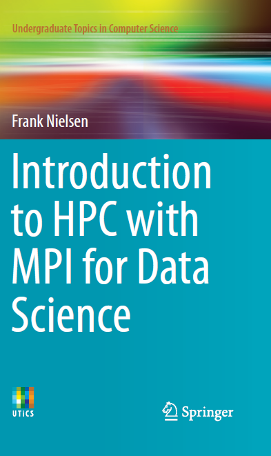
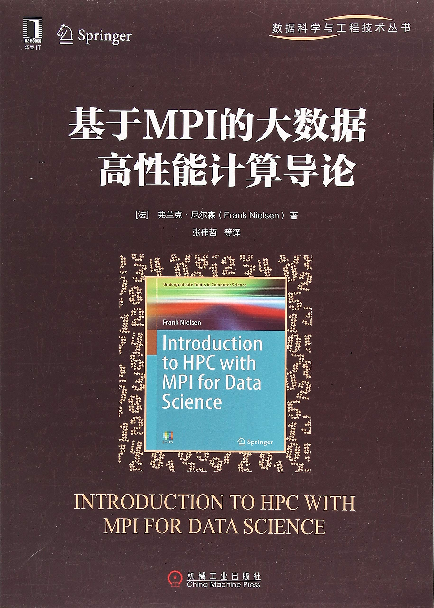
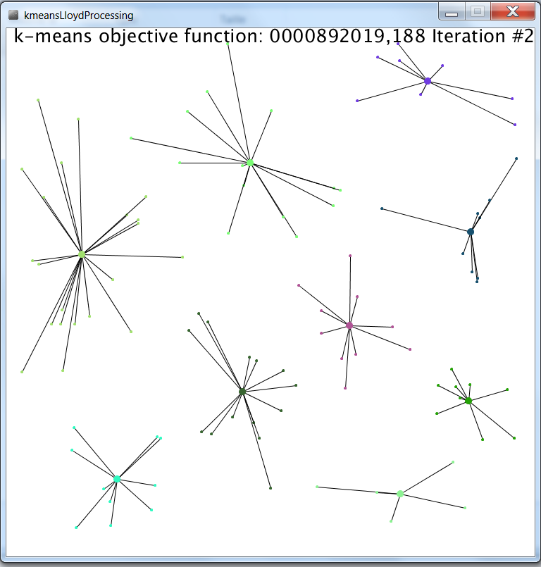
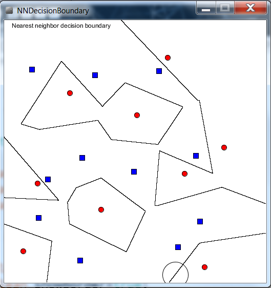
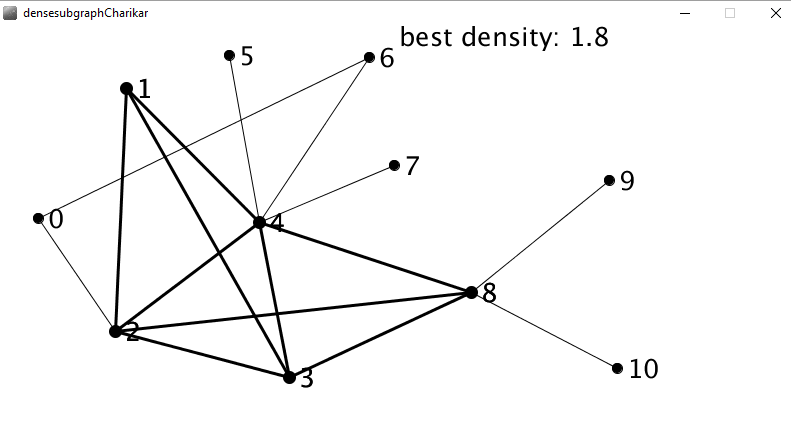

Information
Scroll for TOC with sample pdf and various source codes.
Introduction to HPC with MPI for Data Science, ISBN 978-3-319-21902-8
基于MPI的大数据高性能计算导论, ISBN 978-7111602149 (Chinese)
 
Sample chapter 7:
Partition-based clustering with k-means
Book
information
on Springer web site
More than 30 C++/MPI programs, 40+ exercises, and a 3-hour written exam with the complete solution
Online:
Amazon.fr
,
Amazon.com
,
Amazon.co.jp
, etc.
Table of Contents
Preface
Part I. High Performance Computing (HPC) with the Message Passing Interface (MPI)
[pdf]
A glance at High Performance Computing (HPC)
Introduction to MPI: The Message Passing Interface
[pdf]
Topology of interconnection networks
Parallel Sorting
Parallel linear algebra
The MapReduce paradigm
Part II. High Performance Computing (HPC) for Data Science (DS)
[pdf]
Partition-based clustering with k-means
[pdf]
Hierarchical clustering
Supervised learning: Practice and theory of classification with the k-NN rule
[pdf]
Fast approximate optimization in high dimensions with core-sets and fast dimension reduction
Parallel algorithms for graphs
Appendices
Written exam
SLURM: A resource manager & job scheduler on clusters of machines
Slide set
L1:Introduction to High Performance Computing (HPC) followed by an introduction to C++ and Unix
Extra materials
MPI codes, C++ codes, Gnuplot codes, Scilab codes and R language codes
Part I. High Performance Computing (HPC) with the Message Passing Interface (MPI)
A glance at High Performance Computing (HPC)
Amdahl.gnuplot
Introduction to MPI: The Message Passing Interface:
MPIBlockingCommunication.cpp
MPINonblockingCommunication.cpp
MPICommunicatorRemoveFirstProcess.cpp
MPICommunicatorSplitProcess.cpp
MPIHelloWorld.cpp
MPICBindingExample.c
MPIBoostBindingExample.cpp
MPIBoostBindingExample.cpp
MPIOpenMPExample.cpp
MPIHelloWorld.py
MPIMatrixVectorMultiplication.cpp
MPIFactorialReduce.cpp
MPIMinimumReduce.cpp
MPIMonteCarloPi.cpp
SequentialVolumeUnionSpheres.cpp
MPIVolumeUnionSpheres.cpp
MPIPiApproximationHole.cpp
(incomplete, exercise)
Topology of interconnection networks
GrayString.cpp
GraySTL.cpp
MPIBroadcastRing.cpp
MPIScatteringRing.cpp
MPIBroadcastHypercube.cpp
Parallel Sorting
SequentialQuickSort.cpp
OddEvenSort.cpp
Parallel linear algebra
ExampleLinearRegression.scilab
The MapReduce paradigm
Part II. High Performance Computing (HPC) for Data Science (DS)
Partition-based clustering with k-means
Example-kMeans.R

kmeansLloydProcessing.pde
in
processing
Hierarchical clustering
Supervised learning: Practice and theory of classification with the k-NN rule

NNDecisionBoundary.pde
in
processing
Fast approximate optimization in high dimensions with core-sets and fast dimension reduction
Parallel algorithms for graphs

ParallelDenseSubgraph.pde
SequentialDenseSubgraph.pde
using auxiliary file
graph.java
in
processing
Google Play
and
Google book
Promotional
video
Table of contents in Chinese
(courtesy of Junlin Yao)
[pdf]
Traitement des données massives, polycopié de l'Ecole Polytechnique (INF442)
:
Last updated February 2021, by Frank Nielsen.